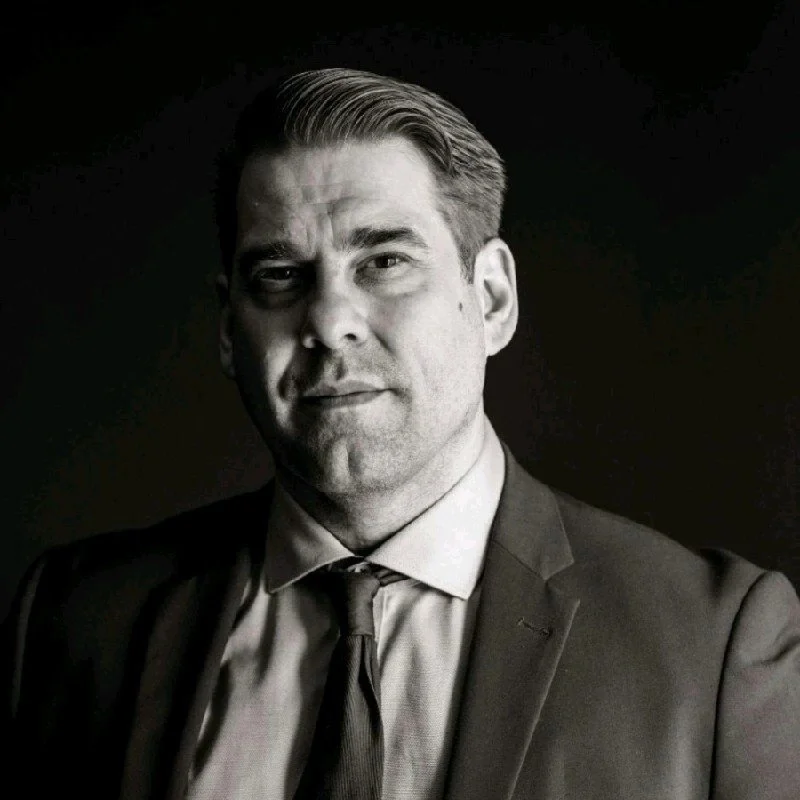

STRATEGISK AFFÄRSRÅDGIVNING
Affärsutveckling.Förhandling. Genomförande.
För ägarledda företag och konsultbolag som behöver utveckla nya affärer, förbereda en viktig förhandling eller driva ett kommersiellt projekt. Du arbetar direkt med Leonardo Celija, i Sverige och internationellt.
Ett tydligt uppdrag. En personlig kontakt.

ARCEO / PERSPECTIVES↗
FRÅN INSIKT TILL HANDLING
Nästa steg börjar med rätt frågor.
Förstå. Prioritera. Genomföra.
Sverige & internationelltStrategi med praktisk förankringProjekt & löpande stöd
DET HÄR HJÄLPER VI DIG MED
Från affärsfråga
till tydlig leverans.
När du behöver hitta rätt partner, förbereda en förhandling eller få ett kommersiellt initiativ genomfört. Vi avgränsar uppgiften och bestämmer vad du ska få.
01↗
Marknads- & partnerkartläggning
Identifiera relevanta kunder och samarbetspartners i en ny eller befintlig marknad. Du får ett prioriterat urval, underlag om aktörerna och en plan för den första dialogen.
EXEMPEL PÅ LEVERANSMarknadsöversikt · Prioriterad partnerlista · Kontaktplan
Prata om ditt behov↗02◇
Förhandlingsstöd
Förbered viktiga kund- och partnerförhandlingar. Vi strukturerar målen, granskar det kommersiella underlaget och förbereder argument, alternativ och nästa steg.
EXEMPEL PÅ LEVERANSFörhandlingsunderlag · Handlingsalternativ · Mötesförberedelse
Prata om ditt behov↗03⌕
Analys & beslutsstöd
Få överblick inför ett viktigt affärsbeslut. Vi granskar underlag och källor, synliggör risker och jämför handlingsalternativ med tydlig skillnad mellan fakta och antaganden.
EXEMPEL PÅ LEVERANSResearch · Scenarier · Rekommenderade nästa steg
Prata om ditt behov↗04→
Kommersiellt genomförande
Få en extra resurs för ett avgränsat affärsutvecklingsuppdrag. Stöd i kund- och partnerdialoger, offertarbete, samordning och uppföljning, med AI-stödda arbetsflöden där de gör nytta.
EXEMPEL PÅ LEVERANSKunddialoger · Kommersiell projektplan · Uppföljning
Prata om ditt behov↗SÅ ARBETAR VI
Genomtänkt från början.
Användbart i praktiken.
Du ska veta vad vi arbetar med, vad du får och hur arbetet går framåt. Omfattning, leveranser och arvode bestäms innan uppdraget startar.
01Förstå uppdraget
Vi går igenom din situation, ditt mål och de frågor som behöver besvaras. Vi sätter ramar och enas om vad ett användbart resultat innebär.
02Skapa riktning
Vi tar fram underlag, prövar antaganden och prioriterar insatser. Du får en konkret plan med tydliga avvägningar.
03Ta nästa steg
Vi levererar det vi har kommit överens om, följer upp och hjälper vid behov till med genomförandet. Du behåller besluten och kontrollen.
ETT SAMARBETE SOM PASSAR
Avgränsat uppdrag
eller löpande stöd.
Börja med ett konkret behov. Vi kommer överens om ansvar, leveranser, tidsram och arvode innan arbetet startar. Du har direktkontakt med Leonardo genom hela uppdraget.
Söker du individuell affärsrådgivning?01Ett avgränsat uppdrag
Exempelvis en partnerkartläggning, ett förhandlingsunderlag eller en kommersiell nulägesanalys. Du får en definierad leverans och rekommenderade nästa steg.
Återkommande rådgivning
För företagsledare som vill ha ett återkommande bollplank i affärsutveckling, kundrelationer och prioriteringar. Vi bestämmer mötesfrekvens, förberedelser och uppföljning.
Konsult i ditt team
För företag och konsultbolag som behöver stöd i kundbearbetning, partnerdialoger eller kommersiell projektledning. Ansvar och omfattning avtalas för det aktuella uppdraget.

Leonardo CelijaGrundare & rådgivare
MÄNNISKAN BAKOM ARCEOCONSULT
Nära din affär.
Personligt engagerad.
Jag heter Leonardo Celija och har över 15 års erfarenhet från finansiella tjänster, energi och komplexa B2B-affärer. Min styrka är att förena analys och förhandling med kunddialog och praktiskt genomförande.
ArceoConsult samlar det arbetet i en personlig konsultverksamhet. Min roll är att ställa rätt frågor, skapa struktur och bidra till att du kommer vidare — från ett första resonemang till ett tydligt nästa steg.
Samarbete på svenska & engelskaUppdrag i Sverige & internationellt
Låt oss prata om din situationLEONARDOS ERFARENHET
Bakgrund som ger
praktisk förankring.
Utvalda meriter från Leonardos tidigare yrkesroller. Den erfarenheten tar han med sig in i dagens rådgivning.
15+ årFinans, energi och B2B
Erfarenhet av reglerade finansiella tjänster, strategiskt kundansvar, komplex förhandling och egen rådgivningsverksamhet.
12 MSEK+Ett flerårigt kundavtal
Hos Göteborg Energi förhandlade Leonardo fram ett avtal värt över 12 MSEK genom samordning mellan ledning, teknik, drift och juridik.
94 %Kundretention
Under sin tid som Investment Consultant hos Fisher Investments Europe nådde Leonardo 94 % kundretention.